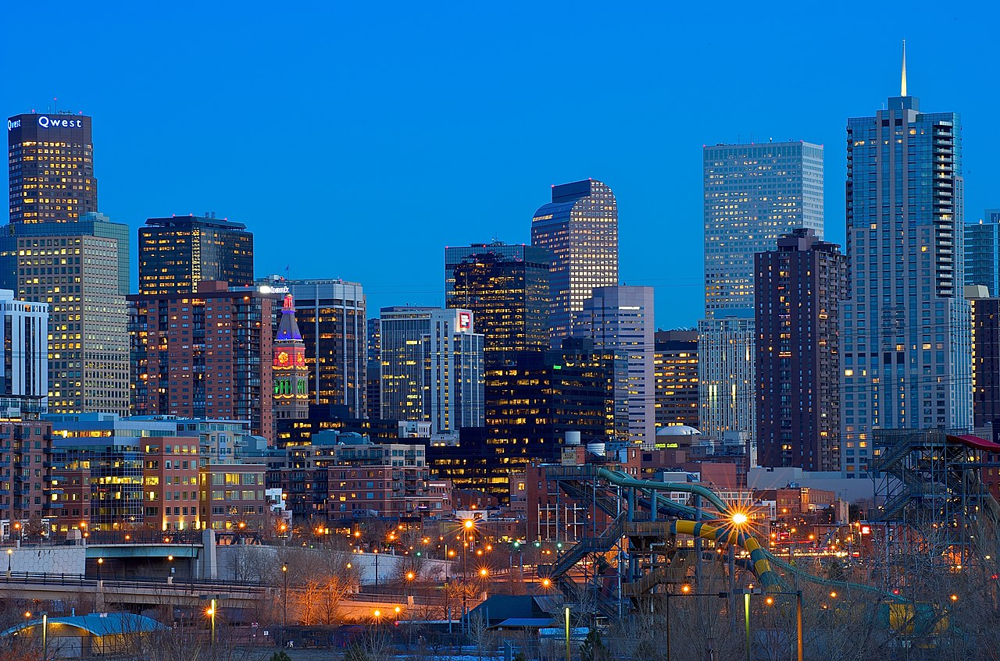

Чапча Святослав Олександрович
Дата народження:
29 травня 2003 рік
Місце народження:
м. Краматорськ
Освіта:
Повна середня - Слов`янська Гімназія, м. Київ
Неповна вища - НТУУ "КПІ", м. Київ
Хобі:
- Кінематограф
- Музика
- Відеоігри
- Велоспорт
- Книги
Улюблені серіали:
- Supernatural (2005-2020)
- Game Of Thrones (2011-2019)
- The Walking Dead (2010-2022)
Улюблене місто:
Денвер - жваве, культурне і поглинене собою місто в США; столиця штату Колорадо. Блискучі хмарочоси центру міста та історичні райони LoDo заповнені броварнями. Тут найкраща «кулінарна сцена» між Чикаго та Каліфорнією. На додачу – 12-метрова скульптура блакитного ведмедя та 18-метрові танцюристи. На аренах стадіонів Invesco Field at Mile High та Coors Field "хоумрани", жести "дай п'ять" та натовпи шалених спортивних фанатів - майже щовечірнє шоу. Дорога в далечінь, високий туман і розріджене повітря – зубчаста пурпурна лінія Передового хребта, ворота у світ незайманої природи, чи не найдивовижнішої на континенті. Словом, є безліч речей, якими можна зайнятися у Денвері.
Місто компактне, люди доброзичливі. Розташований рівно на висоті 1609 метрів (1 миля: звідси і назва «Місто заввишки в милю»), колишній залізничний вузол Дикого Заходу – чудове місце, щоб акліматизуватися. Тут низька вологість і рясно сонячне світло.
